1.1: ParametrizationsExample 1.1.1: Lines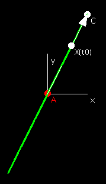
Example 1.1.2: Circles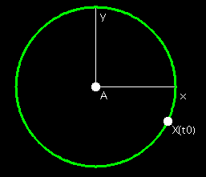
Definition 1.1.3: Length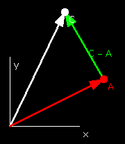
Example 1.1.9: Graphs of Functions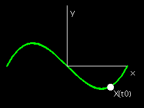
Example 1.1.10: Circles Revisited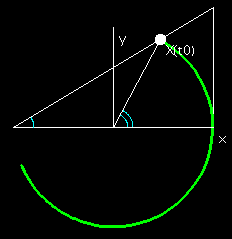
Example 1.1.11: Ellipses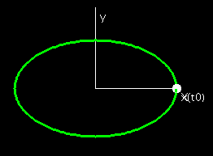
Example 1.1.12: Lissajous Figures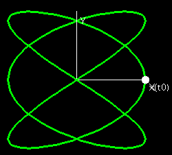
Example 1.1.13: Cycloids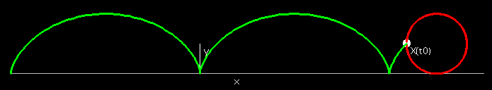
Example 1.1.14: Heart Curve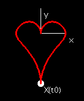
Example 1.1.15: Polar Functions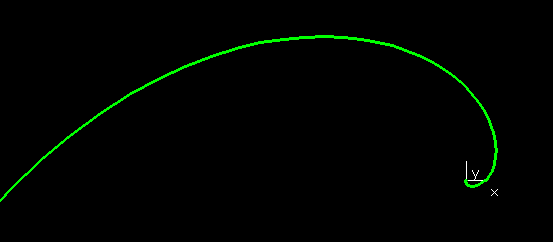
Example 1.1.16: Cardioid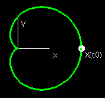
Problem 1.1.1: EpicycloidProblem 1.1.3: DistanceProblem 1.1.6: Distance1.2: Position, Velocity, and AccelerationExample 1.2.4Example 1.2.5
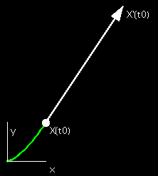
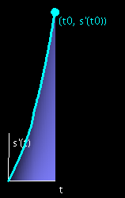
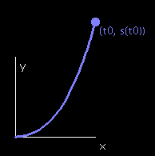
Definition 1.2.6: Unit Tangent Vector
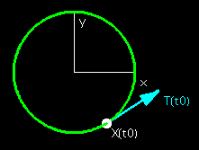
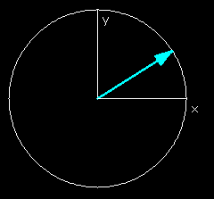
1.3: CurvatureDefinition 1.3.1: Unit Normal VectorDefinition 1.3.2: CurvatureExample 1.3.3: CirclesProblem 1.3.12: Parallel CurveProblem 1.3.15: Pedal Curves1.4 Osculating Circles, Evolutes, and InvolutesDefinition 1.4.4: Osculating Circle and Definition 1.4.7: Evolute CurveDefinition 1.4.10: Involute Curve1.5: Natural EquationsTheorem 1.5.2: Fundamental Theorem of Plane Curves |